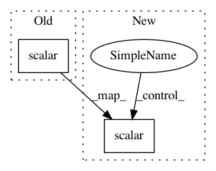

7e5287713d58f17f7a4279df18825c05d7d066e3,jaxnerf/train.py,,main,#,102
Before Change
t_loop_start = time.time()
rays_per_sec = FLAGS.batch_size * steps_per_sec
summary_writer.scalar("steps_per_sec", steps_per_sec, step)
summary_writer.scalar("rays_per_sec", rays_per_sec, step)
precision = int(np.ceil(np.log10(FLAGS.max_steps))) + 1
print(("{:" + "{:d}".format(precision) + "d}").format(step) +
f"/{FLAGS.max_steps:d}: " + f"i_loss={stats.loss[0]:0.5f}, " +
f"avg_loss={avg_loss:0.5f}, " +
After Change
eval_time = time.time() - t_eval_start
num_rays = jnp.prod(jnp.array(test_case["rays"].directions.shape[:-1]))
rays_per_sec = num_rays / eval_time
summary_writer.scalar("test_rays_per_sec", rays_per_sec, step)
print(f"Eval {step}: {eval_time:0.3f}s., {rays_per_sec:0.0f} rays/sec")
summary_writer.scalar("test_psnr", psnr, step)
summary_writer.scalar("test_ssim", ssim, step)
summary_writer.image("test_pred_color", pred_color, step)
In pattern: SUPERPATTERN
Frequency: 4
Non-data size: 2
Instances
Project Name: google-research/google-research
Commit Name: 7e5287713d58f17f7a4279df18825c05d7d066e3
Time: 2021-01-19
Author: barron@google.com
File Name: jaxnerf/train.py
Class Name:
Method Name: main
Project Name: galeone/dynamic-training-bench
Commit Name: f302eba7375d8da3477816a705c7ce628f9a55a8
Time: 2017-05-12
Author: nessuno@nerdz.eu
File Name: dytb/trainer/Trainer.py
Class Name: Trainer
Method Name: train
Project Name: ufal/npfl114
Commit Name: ac7d644980befd105c262c58a07a6222f2fe09ff
Time: 2018-03-11
Author: milan@strakovi.com
File Name: labs/03/mnist_dropout.py
Class Name: Network
Method Name: construct
Project Name: wenwei202/iss-rnns
Commit Name: a909fb05f352255c75dec4f4110acab0573f0b64
Time: 2017-06-20
Author: weiwen.web@gmail.com
File Name: basic/model.py
Class Name: Model
Method Name: _build_sparsity